MATHBHOOT-NIGHTMARES
MATHBHOOT: WHERE NUMBERS COME ALIVE AND SO DO THE NIGHTMARES
At St. Xavier's School, Ansh is known for one thing — trouble. Prankster. Rule-breaker. Chaos magnet.
But on the morning of his mathematics exam, the entire school empties beneath a terrifying storm. Teachers vanish. Corridors fall silent.
And a forbidden room hidden deep within the school has been waiting for him. One step through its door changes everything.
A hidden villa built from living mathematics. Ancient statues that breathe. Equations that should not exist. And something inside MathVilla that knows his name.
Some doors don't just open. They choose you.

AUTHOR: SAKSHI SONI

COPYRIGHT
Copyright @2026 Sakshi Soni
All rights reserved.
The characters and events portrayed in this book are fictitious. Any similarity to real persons, living or dead, is coincidental and not intended by the author.
No part of this book may be reproduced, or stored in a retrieval system, or transmitted in any form or by any means, electronic, mechanical, photocopying, recording, or otherwise, without express written permission of the publisher.
PART-2 TEASER
MATHBHOOT: THE DOOR HAD CLOSED. THE LESSON HAD NOT YET BEGUN.

The door was never the real prison.
It was the beginning.
Somewhere beyond the corridors of MathVilla,
beyond the breathing walls and the equations without answers,
something has awakened.
Ganith is running toward a truth
even the villa fears to remember.
The purple sphere was never meant to leave its chamber.
And deeper inside the structure —
below the mathematics,
below the symbols, below the logic itself —
Something ancient is counting.
Ansh entered the villa searching for answers.
In Part Two,
he will discover that the greatest horrors
are not hidden in darkness.
They are hidden in knowledge.
Because some equations do not solve reality.
They rewrite it.
The lesson has begun.
INTRODUCTION
ANSH
Ansh is the boy who makes everyone laugh — and nobody truly knows. The naughtiest student in St. Xavier's history, the chaos conductor, the legend of every hostel corridor. But at midnight, under a blanket with a torch and a mathematics textbook, he is something else entirely. Focused. Hungry. Terrified of being ordinary. And completely unaware that something inside the school walls has been watching him for a very long time — waiting for exactly the kind of boy who laughs the loudest, hides the deepest, and walks through doors that say Enter At Your Own Risk. This is that story.
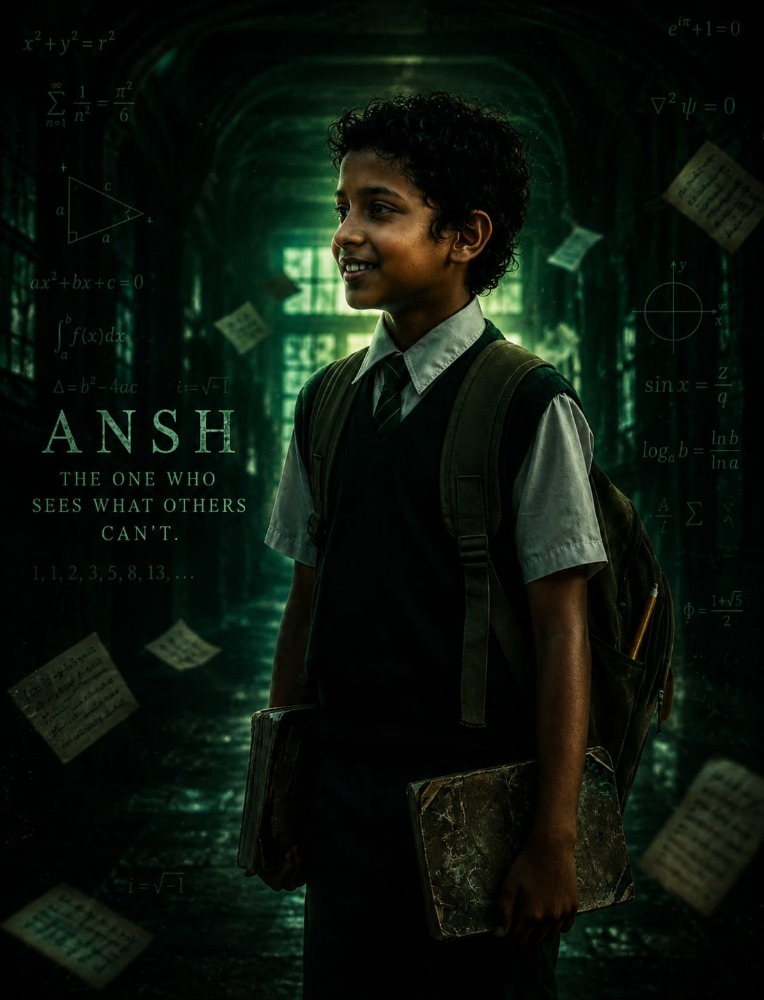
CHAPTER 1 THE CALM BEFORE THE CHAOS
Morning arrived at St. Xavier’s the way it always did — with the shriek of the assembly bell, the thunder of running footsteps, and the kind of chaos that seemed to orbit a single person.
Ansh.
Some students were remembered for marks. Some for discipline. Ansh was remembered for disasters.
Not cruel disasters. Brilliant ones.
A rubber eraser fired from the backbench with sniper precision. A perfectly timed sneeze during the holiest thirty seconds of morning prayer. A fake announcement delivered in the principal’s exact voice that once caused half the senior wing to evacuate their classrooms in confusion.
Even the strictest prefects eventually lost fights against laughter around him.
Ansh moved through school corridors like they belonged to him — tie loose, sleeves folded carelessly, hair permanently untamed no matter how many times he pushed it back. There was a dangerous confidence in his grin, the confidence of someone who always believed he could escape consequences before they arrived.
Teachers called him a distraction.
Juniors treated him like mythology.
And somehow, despite the punishments, warnings, confiscated notebooks, and endless threats of suspension, nobody stayed angry at him for long.
Noise followed him everywhere.
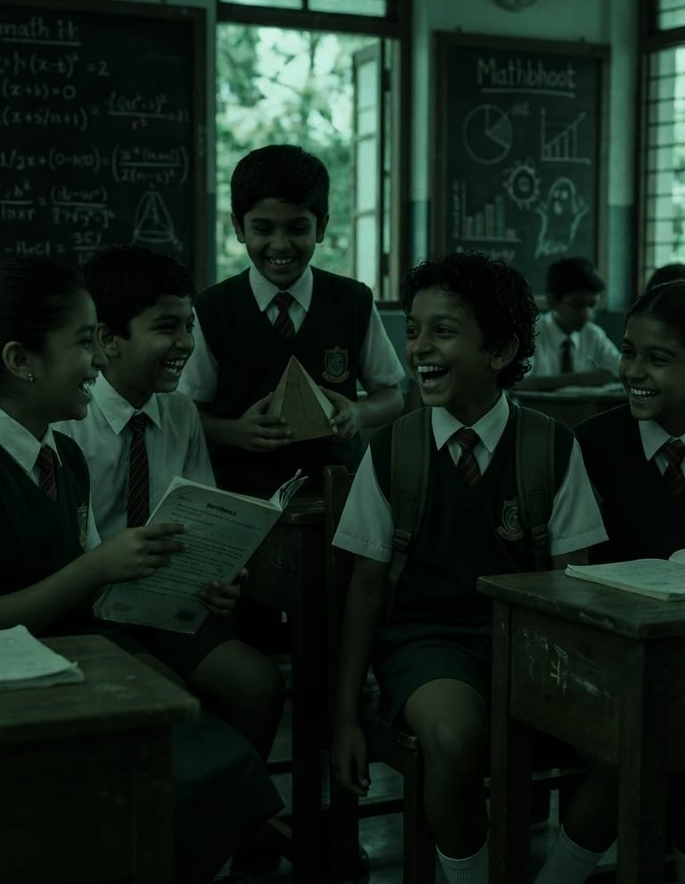
He could transform a science practical into a stand-up performance. Convince half the class that a lizard was loose inside the fan ducts. Start a paper-ball war during free period without ever being caught holding ammunition himself.
Once, he had switched the classroom labels of two sections so perfectly that an entire batch attended the wrong lecture for fifteen minutes before anyone realised.
The story still survived in the hostel corridors like ancient folklore.
Teachers had learned to fear one specific thing above all else:
Silence.
If Ansh became too quiet, it usually meant he was planning something catastrophic.
One afternoon, he had balanced a duster above a classroom door with such mathematical precision that it remained there through two entire periods before finally collapsing onto an unlucky senior’s head.
But beneath the chaos lived something people rarely noticed.
Ansh never mocked weak students.
Never bullied juniors.
Never ignore someone sitting alone.
Even his pranks carried strange warmth inside them, as though causing chaos was simply the language he used to keep life interesting.
Then came the announcement.
“Tomorrow,” said Sakshi ma’am, raising a sheet of paper like a death sentence, “is your Mathematics examination.”
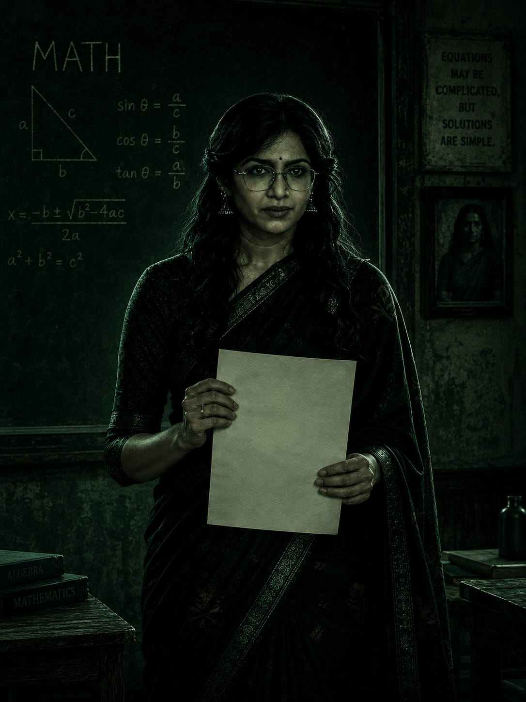
A collective groan swept through the classroom.
One boy collapsed dramatically onto his desk. Someone in the back whispered a prayer for survival. Another muttered:
“Brothers… it’s over.”
Sakshi ma’am adjusted her silver-rimmed spectacles slowly — the universal signal that disappointment was approaching.
“I sincerely hope,” she said, her maroon saree catching the white classroom light, “that at least some of you have spent more time studying than behaving like escaped zoo animals.”
The classroom exploded into suppressed laughter.
Her eyes locked instantly onto Ansh.
“Especially you.”
Ansh placed a hand over his chest with fake sincerity.
“Ma’am,” he said solemnly, “your faith in me inspires me every day.”
The chalk piece launched toward his head with terrifying speed.
He dodged it effortlessly.
The class erupted.
Even Sakshi ma’am failed to suppress the corner of a smile before regaining control.
“Tomorrow,” she warned, “no drama. Only mathematics.”
Ansh grinned.
Outwardly, he looked completely relaxed — leaning back in his chair with the calm arrogance of someone who either knew something nobody else did…
…or was about to fail spectacularly and had accepted his fate with style.
But somewhere beneath the performance, something small had already begun to awaken.
Tension.
Quiet.
Sharp.
Like the first crack forming beneath ice.
✦ ✦ ✦
Back in the hostel that evening, Ansh reached peak chaos.
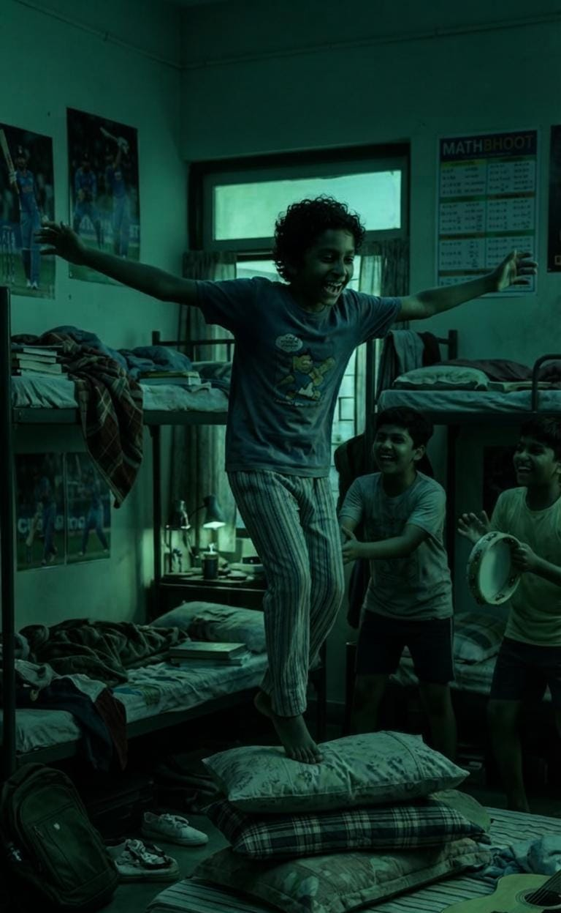
Paper rockets flew across the dormitory with military accuracy, somehow targeting only students who were trying to study. He convinced Raju that difficult equations were actually secret government codes designed to identify hidden child geniuses.
Later, he recreated the Battle of Panipat using mathematics textbooks as soldiers and a steel water bottle as artillery.
He still won despite changing the rules every thirty seconds.
At one point, he wrapped himself in a blanket and began impersonating Sakshi ma’am so perfectly that boys were suffocating themselves with pillows to avoid getting caught laughing.
“Class!” he thundered dramatically while pacing between beds. “If this theorem is not completed by tomorrow, your marks will personally jump out of the window.”
Someone laughed so hard they rolled off the bed.
Eventually, even the students trying desperately to revise gave up completely.
The dormitory dissolved into noise.
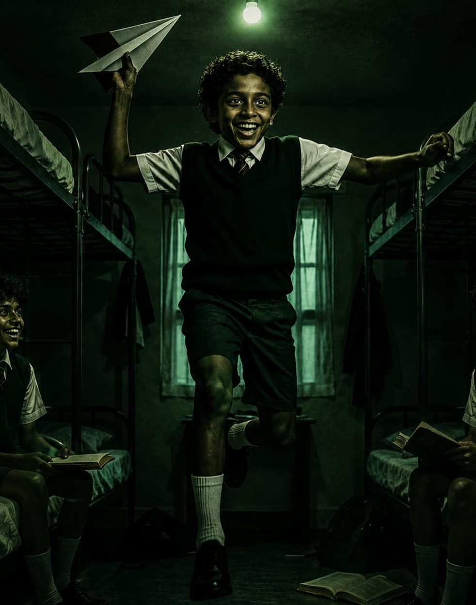
Flying socks.
Mock arguments.
Slippers skidding across the floor.
Impossible maths questions screamed across the room like battlefield challenges.
And at the center of it all stood Ansh — conducting chaos with the confidence of an orchestra master.
But every few minutes, unnoticed by everyone else, his eyes drifted toward the clock.
10:15.
10:47.
11:03.
Each passing minute tightened something invisible inside him.
By lights-out, the entire floor was exhausted from laughter.
Then the warden’s footsteps faded.
The whispers died.
The ceiling fans hummed softly in the darkness.
And suddenly—
something changed.
✦ ✦ ✦
Midnight.
A torch flickered alive beneath Ansh’s blanket.
Its pale circle of light revealed a mathematics textbook — worn at the edges, filled with annotations, secretly loved.
The clown disappeared.
In his place sat someone else entirely.
Focused.
Precise.
Hungry.
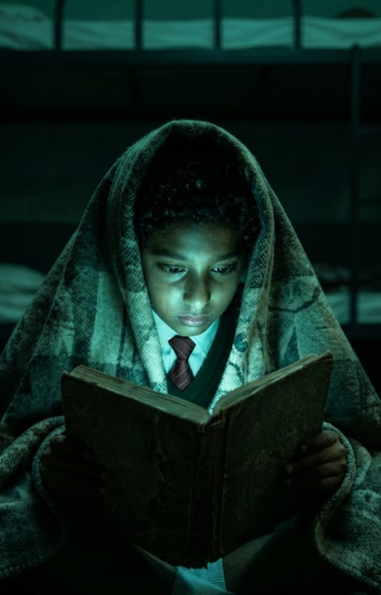
His eyes moved rapidly across the page, stripped now of every trace of laziness he showed the world during the day. He worked through theorems the way detectives solve crimes — patiently dismantling one layer at a time until truth revealed itself beneath.
Equations crawled across the paper like hidden machinery.
Every few minutes he paused, staring silently into space as though rearranging entire systems inside his mind before diving back into the problem again.
Outside, the hostel slept.
Inside the blanket existed another universe entirely.
A universe made of symbols, calculations, patterns, and stubborn determination.
Sweat gathered near his forehead despite the cool air.
Notebook pages filled steadily with shortcuts, arrows, reminders, half-finished calculations.
Nobody would have believed it.
Not after the jokes.
Not after the performances.
Not after the chaos.
But this was the real secret of Ansh:
He was terrified of being ordinary.
And somewhere along the way, the world had decided he was only “the funny one.”
So he learned to hide ambition behind comedy.
Because making people laugh was easier than admitting he desperately wanted to matter.
✦ ✦ ✦
At 4:30 AM, he solved the final theorem.
The torch clicked off.
Darkness rushed back instantly.
Ansh lay motionless beneath the blanket, staring upward at a ceiling he could no longer see.
The exam was only hours away.
He had not slept.
Outside, the sky had begun turning grey.
And with it came something he hadn’t expected.
Fear.
Not sudden fear.
Slow fear.
The kind that enters quietly — like cold air slipping beneath a locked door.

What if his mind went blank?
What if every formula disappeared the moment he saw the paper?
What if confidence had only been another performance?
The hostel suddenly felt enormous and hollow around him.
A dog barked somewhere far away.
Then silence again.
For the first time that night, Ansh stopped feeling like a legend.
Stopped feeling funny.
Stopped feeling untouchable.
He was only fourteen years old.
A boy lying awake in the dark, terrified that even after all the effort…
…it still might not be enough.
He shut his eyes.
Sleep, he told himself.
You’ll be fine.
But somewhere beyond the hostel walls, beyond the sleeping school, beyond the mathematics waiting for him in the morning—
something had already begun moving toward him.
And before sunrise arrived…
everything would change.
✦ ✦ ✦
CHAPTER 2 ENTER AT YOUR OWN RISK
The first thing Ansh noticed was the silence.
Not ordinary silence.
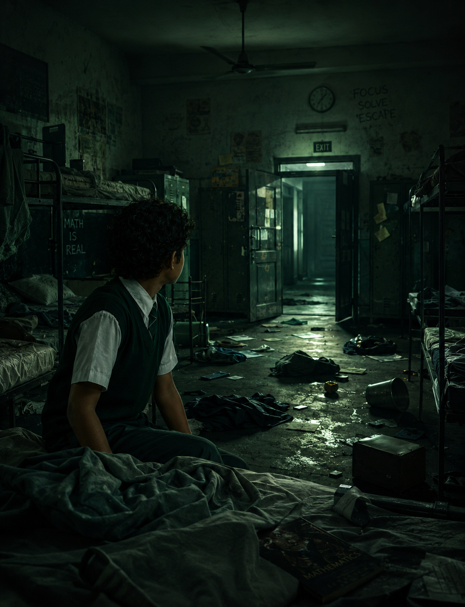
Not the soft breathing quiet of sleeping students and rotating ceiling fans.
This silence felt… wrong.
Pressed.
Heavy.
Like the entire world had stopped speaking at once.
His eyes opened slowly.
The ceiling fan above him was dead still.
Ansh frowned.
For a few seconds, his sleepy mind tried to reject what it was seeing. St. Xavier’s hostel was never silent. Someone was always snoring, laughing, whispering, throwing slippers, arguing over missing notebooks.
But now—
nothing.
No voices.
No footsteps.
No electricity.
The usual strip of corridor light beneath the dormitory door had vanished completely.
Only a strange grey half-light leaked through the windows — the kind of weak colourless light that arrives before storms, when morning itself seems uncertain about appearing.
Ansh sat up.
And froze.
The dormitory was empty.
Every bed was abandoned.
Blankets half-fallen to the floor.
Pillows scattered.
Open trunks.
Knocked-over water bottles slowly dripped onto the tiles.
It looked less like people had left…
…and more like they had evacuated.
Fast.
Without thinking.
Without looking back.
Ansh checked his watch.
6:47 AM.
Exam day.
✦ ✦ ✦
The sky outside looked diseased.
Dark clouds stretched from horizon to horizon in swollen layers, hanging so low they felt close enough to touch. There was no sunrise. No warmth. No trace of morning.
Only pressure.
The wind struck him the moment he stepped outside the hostel.
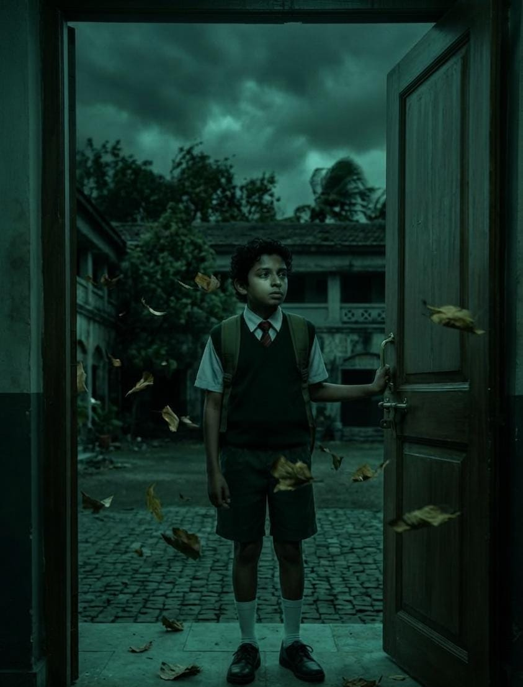
Cold.
Violent.
Wrong for this season.
Dry leaves exploded across the courtyard in spiraling waves, scraping across the ground like frantic insects. Some plastered themselves against windows before tearing free again.
The entire school looked drained of life.
Streetlights dead.
Buildings were dark.
Even the emergency lamp above the hostel entrance — the one that activated automatically during power cuts — remained lifeless.
The only illumination came from the storm itself.
A thin grey light that made the campus look ancient.
Like a memory of a school instead of a real one.
And through the middle of it—
people were running.
✦ ✦ ✦
Not walking.
Not casually leaving.
Running.
Students flooded toward the main gate with frightening urgency. Junior boys sprinted outright, bags bouncing violently against their backs. Seniors moved faster than dignity allowed, their faces tight with controlled panic.
Even the prefects looked terrified.

Teachers pushed through the crowd without speaking.
The geography sir.
The Hindi ma’am.
The sports coach who usually laughed through emergencies.
All of them moving in one direction.
Away.
Ansh stepped into the chaos.
“Raju!”
He grabbed his dormitory mate’s arm.
“What happened? Why is everyone leaving?”
Raju yanked his arm free instantly.
Not angrily.
Desperately.
He didn’t even look at Ansh before disappearing into the crowd.
Ansh blinked.
Confused.
Then he spotted Deepak.
“Deepak! Oi—what’s going on?”
Nothing.
Deepak walked past him as though he didn’t exist.
Ansh turned sharply toward a group of Class 9 boys who normally followed him around like disciples.
“Guys!”
He stepped directly into their path.
“Someone answer me!”
The boys split around him without slowing down.
Like water flowing around a stone.
Fear crawled slowly into Ansh’s stomach.
He grabbed the sleeve of a passing senior.
“Please—just tell me what’s happening—”
The senior tore himself free and kept moving.
No eye contact.
No hesitation.
No humanity.
Only escape.
The wind roared louder.
A cyclone of dead leaves spiraled violently between Ansh and the retreating crowd.
And suddenly—
He understood something terrible.
These people had never really known him.
They knew the jokes.
The pranks.
The performances.
But fear reveals the truth about people faster than honesty ever can.
And in the moment that mattered—
Everyone chose themselves.
The final students disappeared through the school gates.
Silence swallowed the courtyard again.
Ansh stood alone beneath the darkening sky while thunder rolled somewhere beyond the clouds like something enormous shifting in its sleep.
For the first time in years—
he felt completely abandoned.
✦ ✦ ✦
“Ansh.”
He spun around instantly.
Sakshi ma’am stood at the top of the school steps.
Her maroon saree snapped violently in the wind. Grey storm-light reflected across her silver-rimmed spectacles. Unlike everyone else, she wasn’t running.
She was waiting.
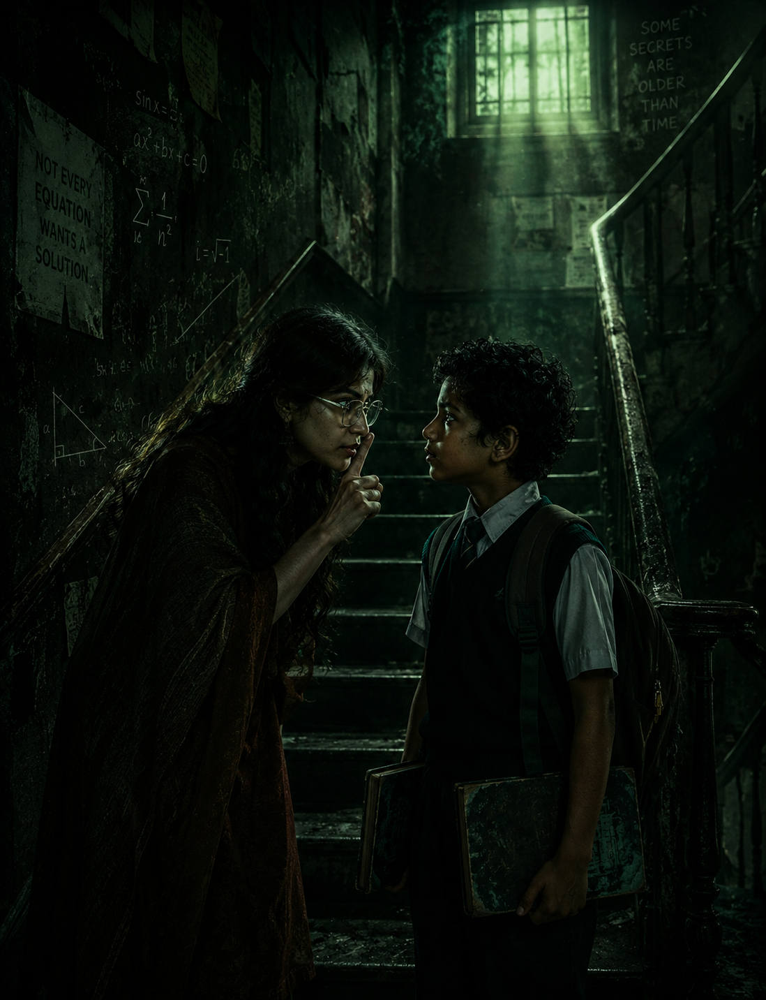
Slowly, deliberately, she descended the staircase toward him.
And when she finally stopped in front of him, Ansh felt something colder than fear settle quietly inside his chest.
Concern.
Not irritation.
Not discipline.
Not disappointment.
Real concern.
“Listen carefully,” she said softly.
Her voice carried a strange weight beneath it, as though every word was being held down by effort.
“I am only going to say this once.”
Ansh nodded.
Sakshi ma’am glanced briefly toward the school building behind them.
“This school is older than people think,” she said. “Much older.”
The wind howled across the courtyard.
“These classrooms have been rebuilt. Renovated. Painted again and again over decades.” Her eyes darkened slightly. “But the ground beneath them never changed.”
Thunder growled somewhere overhead.
“And neither did what lives inside it.”
Ansh felt his heartbeat slow.
“There is a room somewhere in this school,” she continued. “I won’t tell you where it is. I won’t tell you its number. But if you find it…”
She paused.
“…you must not enter.”
Something about the way she said it made the air feel colder.
“People have entered before,” she said quietly. “Students. Teachers. Brilliant mathematical minds. People are far smarter than either of us.”
The thunder came closer this time.
Low.
Heavy.
Alive.
“They disappeared.”
Ansh swallowed.
“No bodies,” she continued. “No explanation. Nothing.”
The storm wind tore across the courtyard hard enough to shake nearby windows.
“We only know one thing.”
She looked directly into his eyes.
“When you enter that room…”
Her voice stopped.
For the first time since he had known her—
Sakshi ma’am looked afraid.
“The room is marked,” she finished quietly. “You’ll recognize it immediately.”
A long silence stretched between them.
Then she stepped back.
“Go home, Ansh.”
“Ma’am—”
“Right now.”
And without another word, she turned and walked toward the gate.
The storm swallowed her slowly.
✦ ✦ ✦
The school became silent again.
Just Ansh.
The wind.
And the sky pressing lower overhead like something waiting to collapse.
Cold droplets touched his skin.
The rain was beginning.
Go home, he told himself.
You heard her.
Go home.
He started toward the gate.
One step.
Two.
Three.
Four.
Five.
He stopped.
✦ ✦ ✦
Later, he would try to explain why he turned around.
Curiosity.
Ego.
Stupidity.
But none of those answers ever felt complete.
Something else had moved inside him.
Something quiet.
Something pulling.
And before he fully understood what he was doing—
Ansh walked back into the school.
✦ ✦ ✦
Without electricity, the corridors no longer felt familiar.
The pale storm-light filtering through cracked windows only deepened the shadows instead of removing them.
His footsteps echoed unnaturally loudly.
The east wing.
Nothing.
The library.
Empty.
The assembly hall.
Silent.
The science corridor.
Open the lab door.
Pages of an abandoned notebook turning slowly in the wind as if invisible hands were reading it.
Still nothing.
Then he found the old passage behind the main staircase.
The forgotten part of the building.
Cracked floor tiles.
Damp walls.
Rust-stained pipes.
Windows have gone cloudy with age.
And there—
at the very end of the corridor—
stood the room.
Small.
Rotting.
Wrong.
It crouched at the corridor’s end like something that had survived long after it should have died.
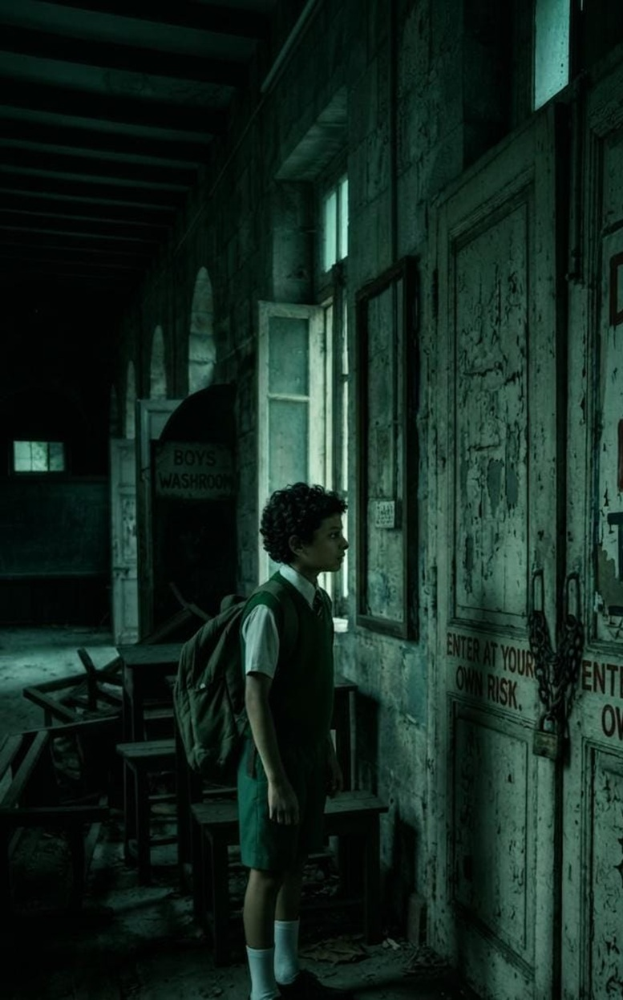
Its wooden door was peeling in strips, exposing raw dark timber beneath centuries of paint.
Through the dirty glass panel beside it, Ansh could barely make out the interior.
Broken desks.
Collapsed benches.
A cracked greenboard coated in pale dust.
Faint markings spread across its surface.
Equations.
Or something pretending to be equations.
The entire room looked less abandoned than forgotten by reality itself.
Then Ansh saw the words painted across the door.
Red.
Layer over layer over layer of red paint.
As though generations had repeatedly rewritten the same warning.
ENTER AT YOUR OWN RISK
Thunder exploded directly overhead.
The school building groaned.
Every instinct inside Ansh screamed at him to leave.
Now.
Immediately.
He stepped forward instead.
The door flew open.
Not slowly.
Not naturally.
It slammed inward with violent certainty, like someone had been standing behind it waiting for him this entire time.
Darkness waited inside.
Not normal darkness.
This darkness felt aware.
Ansh froze.
Then something pulled him.
Not physically.
Not by force.
Something colder.
Deeper.
A certainty moving through his chest and limbs like invisible gravity.
One step.
Then another.
He crossed the threshold.
The door slammed shut behind him.
The sound echoed like a coffin lid sealing shut.
Darkness swallowed everything.
Absolute.
Airless.
And then—
from somewhere impossibly close—a voice whispered through the black.
Ancient.
Patient.
Reciting.
A theorem.
One that had no answer.
CHAPTER 3 THE LIGHT SHOULD NOT BE FOLLOWED
Darkness.
Not the kind people close their eyes into.
The other kind.
The kind that closes around you.
Ansh could feel its weight pressing against his skin. The air was impossibly cold — not naturally cold, but precise, as though the temperature itself had been calculated to produce maximum isolation.
He couldn’t see the walls.
Couldn’t see the ceiling.
Couldn’t even prove the floor beneath him truly existed.
The classroom door behind him was gone.
Not hidden.
Gone.
Ansh spun around instantly, hands searching through empty air.
Nothing.
No wood.
No peeling paint.
No handle.
Only darkness stretching endlessly in every direction.
Then the voice returned.
Soft.
Ancient.
Patient.
Still reciting.
The theorem drifted through the blackness in a language that felt disturbingly close to understanding, as though his mind almost recognised it before reality pulled the meaning away again.
Ansh froze.
Whenever he was terrified, he became very still.
Think, he told himself.
Panic later.
Think now.
He inhaled slowly.
The air smelled faintly of chalk dust and ancient paper — the scent of forgotten libraries and books untouched for generations.
He was trapped inside something.
And trapped spaces required one thing first.
Light.
The moment the thought formed—
something appeared.
✦ ✦ ✦
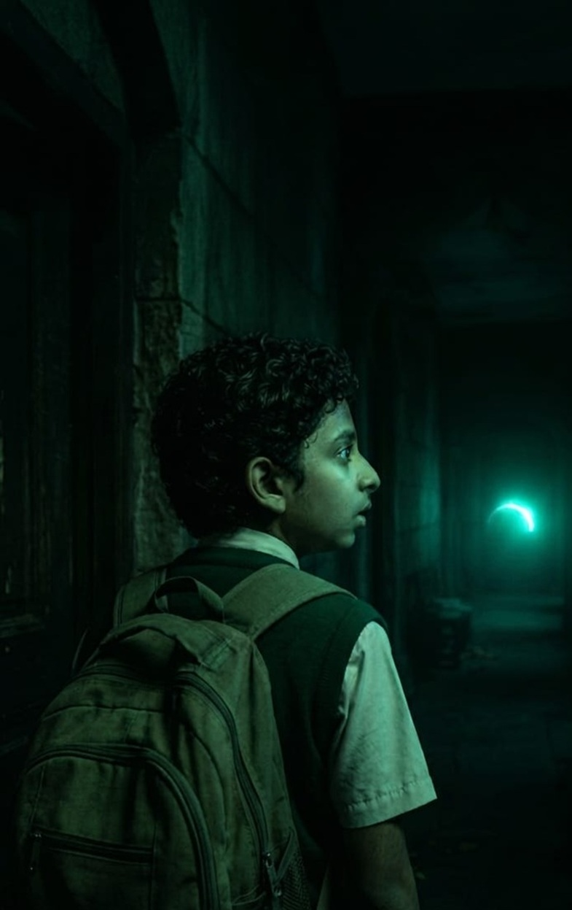
A thread of silver.
Hair-thin.
Almost imaginary.
It floated somewhere ahead in the darkness, too distant for him to measure properly.
It did not illuminate the space around it.
It did not weaken the darkness.
It simply existed.
A single line of pale silver suspended inside infinity.
Ansh stared at it.
Every instinct he possessed screamed the same word.
No.
He walked toward it anyway.
✦ ✦ ✦
The silver thread grew slowly as he approached.
Not suddenly.
Not dramatically.
It expanded the way dawn arrives — so gradually that you only realise the world has changed after it already has.
Thread became a line.
The line glowed.
Glow became direction.
The floor beneath his feet changed too.
The frozen stone softened into something smoother, faintly warm beneath his shoes. His footsteps no longer echoed violently through the dark. The surface absorbed sound gently, almost politely.
The darkness around him thinned.
Not into light.
Into shadow.
And within those shadows—
shapes emerged.
Ansh slowed.
The walls surrounding him were carved completely from floor to ceiling.
Mathematics.
Not scribbled.
Not painted.
Carved.
Deep into stone with terrifying precision.
Equations stretched endlessly through the corridor. Geometric patterns folded into themselves with impossible symmetry. Spirals repeated across the walls in perfect Fibonacci progression. Fractals branched outward infinitely, repeating at every scale no matter how closely he looked.
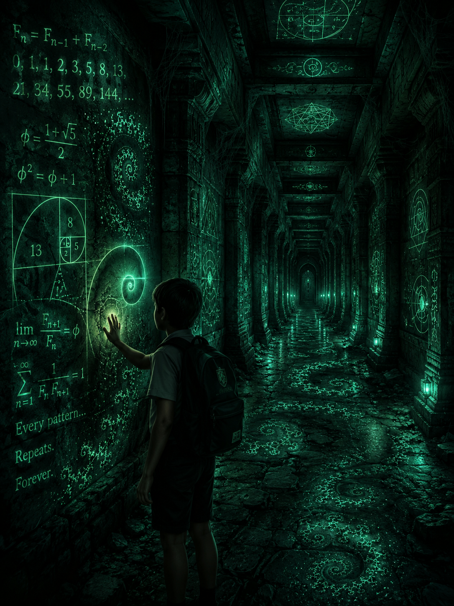
The deeper he stared—
the more the patterns felt less like decoration…
…and more like language.
His hand rose instinctively toward the wall.
Warm.
Ansh jerked his hand back immediately.
The stone should not be warm.
Especially not stone buried inside impossible darkness.
He kept walking.
✦ ✦ ✦
And then the silver light became a doorway.
A rectangle of pale silver-blue illumination unfolded ahead of him, sharp against the shadows.
The doorway stood open.
Waiting.
Light spilled across the floor like an invitation.
Or a trap pretending to be one.
Ansh stepped through.
And forgot how to breathe.
✦ ✦ ✦
Night stretched before him.
Perfect.
Impossible.
A sky crowded with stars glittered overhead like powdered chalk scattered across black velvet.
The abandoned classroom was gone.
The school was gone.
In their place stood a stone path leading toward something enormous waiting in the distance.
The villa.
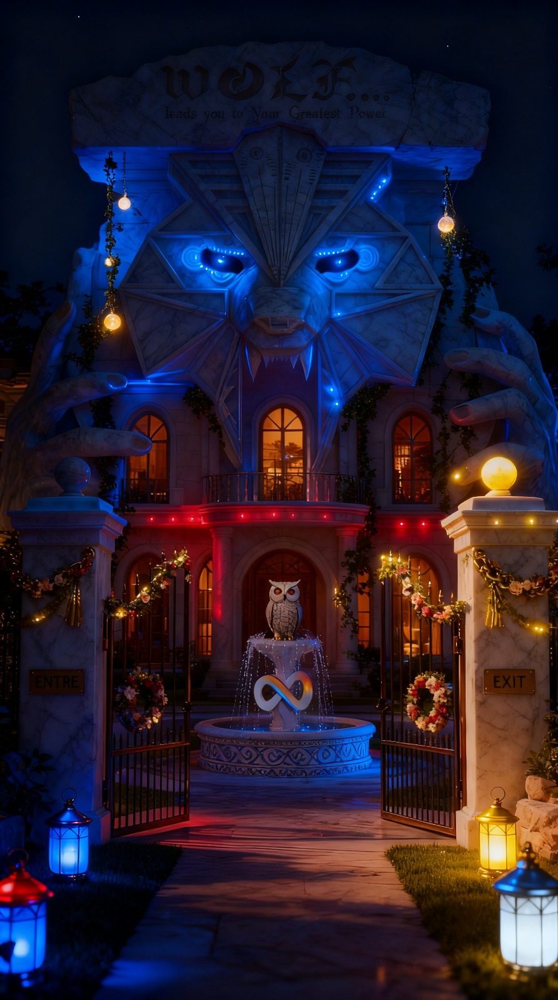
Ansh saw the gate first.
It towered ahead of him with unnatural presence, as though the structure understood it was being observed.
Black wrought iron curved upward into precise spirals — not random decoration, but exact mathematical forms shaped according to the golden ratio. Lanterns mounted on either side cast alternating pools of amber and sapphire light across the metalwork.
Warm light.
Cold light.
One and zero.
Binary.
The gate pillars were carved from white marble veined faintly with silver. Equations spiraled upward across their surfaces.
Euler’s identity.
The quadratic formula.
Geometric proofs.
Not displayed like art.
Declared like scripture.
Golden chains draped between the pillars in flawless curves.
Even the curves obeyed mathematical law.
Flower wreaths surrounded the entrance in spirals so perfectly arranged they looked less grown than calculated.
Then Ansh saw the wolf.
Its massive stone face loomed above the gate, carved with impossible detail.
Its eyes glowed electric blue.
Not artificial blue.
Living blue.
The eyes did not merely look at him.
They examined him.
Ansh felt a sudden, absurd sensation that the wolf was solving him internally like an equation.
Above the sculpture, carved into pale stone:
WOLF LEADS YOU TO YOUR GREATEST POWER
The words sent something cold through his spine.
✦ ✦ ✦
Beyond the gate, the stone pathway stretched toward the villa in flawless symmetry.
Amber lanterns stood to the right.
Blue lanterns to the left.
Alternating endlessly.
Binary code transformed into architecture.
At the center of the path stood a fountain.
White marble.
Circular basin.
Its edges carved into the spiraling geometry of the Mandelbrot set — the mathematical boundary between order and infinity.
Water rose upward in perfect controlled arcs before descending again with machine-like precision.
And perched atop the fountain—
the owl.
White stone.
Immaculate.
Still.
Its amber eyes moved slowly toward Ansh.
Not through him.
At him.
Watching.
Recognising.
Waiting.
The owl rotated its head with slow mechanical smoothness until their eyes fully met.
Neither moved.
Neither blinked.
For one impossible moment, Ansh felt certain of something he could not explain.
The owl had expected him.
✦ ✦ ✦
Then his attention shifted beyond the fountain—
to the villa itself.
Three storeys.
Pale limestone glowing softly beneath the night sky.
Every arch.
Every window.
Every column.
Every measurement.
Perfect.
The building wasn’t merely designed.
It was proven.
The proportions followed hidden mathematical relationships his mind recognised instinctively even before he consciously understood them. Golden ratios repeated through the architecture. Conic curves shaped the arches. Invisible geometric grids governed every visible structure.
Nothing was accidental.
Nothing was approximate.
The villa felt less constructed than inevitable.
As though mathematics itself had slowly grown into physical form.
Warm golden light spilled through tall windows, throwing shifting shadows across the walls.
But the shadows weren’t random.
Ansh noticed immediately.
They moved in repeating sequences.
Patterns.
Everything here obeyed rules.
Red light traced the lower edge of the villa like a glowing horizontal axis.
Blue light illuminated the wolf above like a vertical axis.
Coordinate geometry.
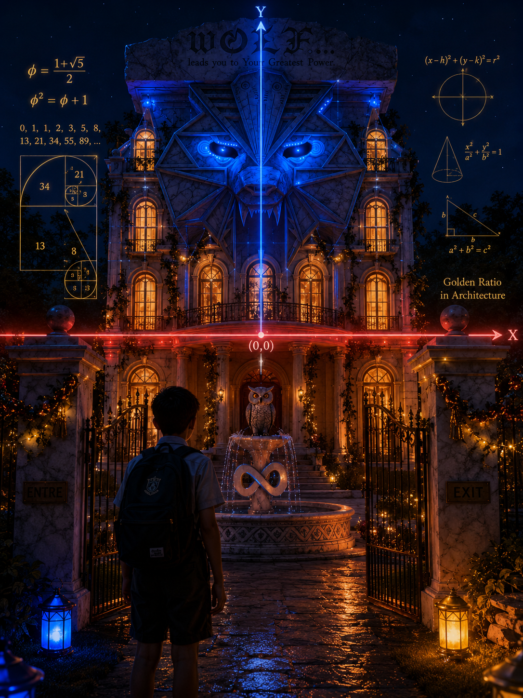
The entire structure was a coordinate plane.
X and Y.
The realization almost made him laugh.
Even now—
even terrified—
his brain could not stop solving things.
And strangely…
for the first time since entering the room—
he no longer felt afraid.
He felt understood.
✦ ✦ ✦
The gate opened soundlessly beneath his hand.
Ansh walked forward.
Past the binary lanterns.
Past the fountain.
Past the owl whose amber eyes followed him every step of the way.
The sound of falling water echoed softly through the night.
He climbed three marble steps toward the entrance.
Three.
Prime number.
Of course.
Above the doorway, deeply carved into the stone:
GO UP. EVOLVE.
The main door was ancient dark wood reinforced with iron studs arranged in a pattern that secretly mapped the opening digits of pi.
Warmth radiated from the other side.
Not ordinary warmth.
Welcome warmth.
The warmth of something that wanted him to enter.
Ansh raised his hand toward the door—
And before his fingers touched it—
the door opened inward.
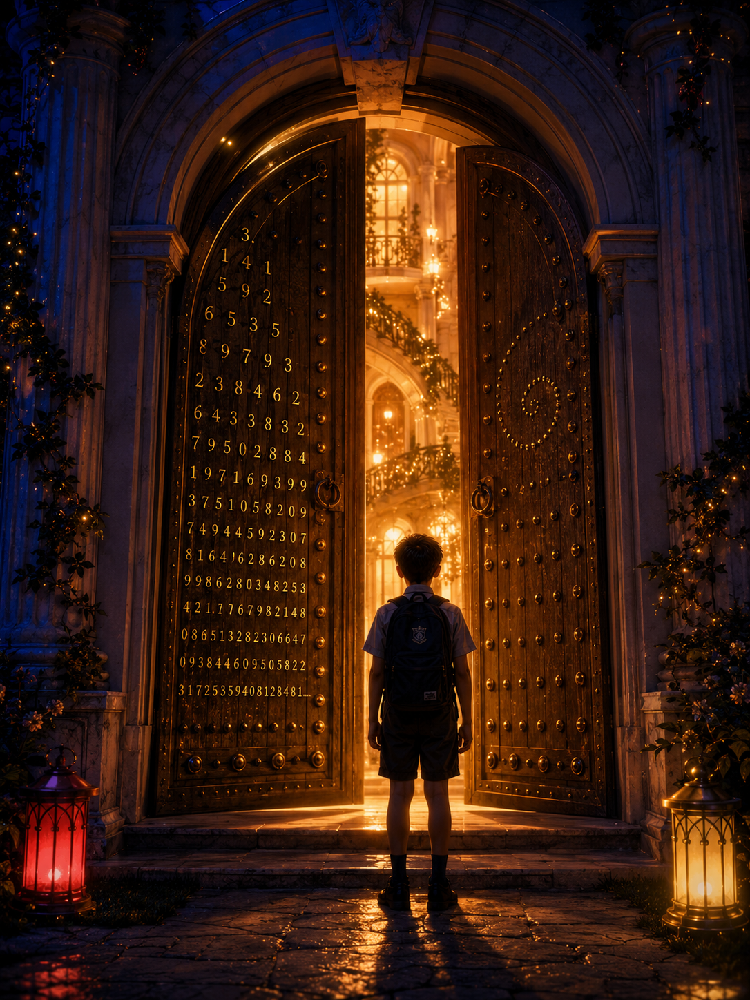
Golden light spilled across him.
Deep inside the impossible mathematics of the villa—
the voice waited.
Still ancient.
Still patient.
Still reciting the theorem with no answer.
CHAPTER 4 WHEN BEAUTIFUL THINGS DEVOUR YOU
The door opened.
Not because Ansh pushed it.
Not because of the wind.
It opened with the calm certainty of something that had been waiting for him specifically.
Warmth flooded outward immediately.
Not ordinary warmth.
Living warmth.
The slow exhale of something enormous breathing against his skin.
It lifted the collar of his school uniform gently. Stirred the pages of the mathematics textbook beneath his arm.
And the smell—
chalk dust.
Old paper.
Fresh graphite.
The scent of mathematics worked patiently by human hands across generations.
Ansh froze.
Every instinct inside him had screamed RUN since the moment he entered the forbidden room.
But the smell of chalk dust reached into him quietly—
and the fear softened.
He stepped inside.
Behind him—
the door closed with the sound of certainty.
✦ ✦ ✦
The entrance hall rose upward impossibly high.
Three storeys of open atrium curved above him in pale limestone arches glowing softly gold beneath hanging lights.
Every surface was covered in mathematics.
Not painted.
Carved.
Equations spiraled upward across the walls with terrifying precision. Arithmetic near the floor. Algebra higher up. Geometry climbing toward calculus and beyond.
The progression felt deliberate.
Evolutionary.
The building itself wasn’t decorated with mathematics.
The building was mathematics.
Ansh walked slowly across the marble floor, staring upward with helpless fascination.
Near the ceiling, equations glimmered faintly beyond readable distance — mathematics so advanced his mind recognised its complexity before it understood its meaning.
The walls seemed to whisper:
Come higher.
Learn more.
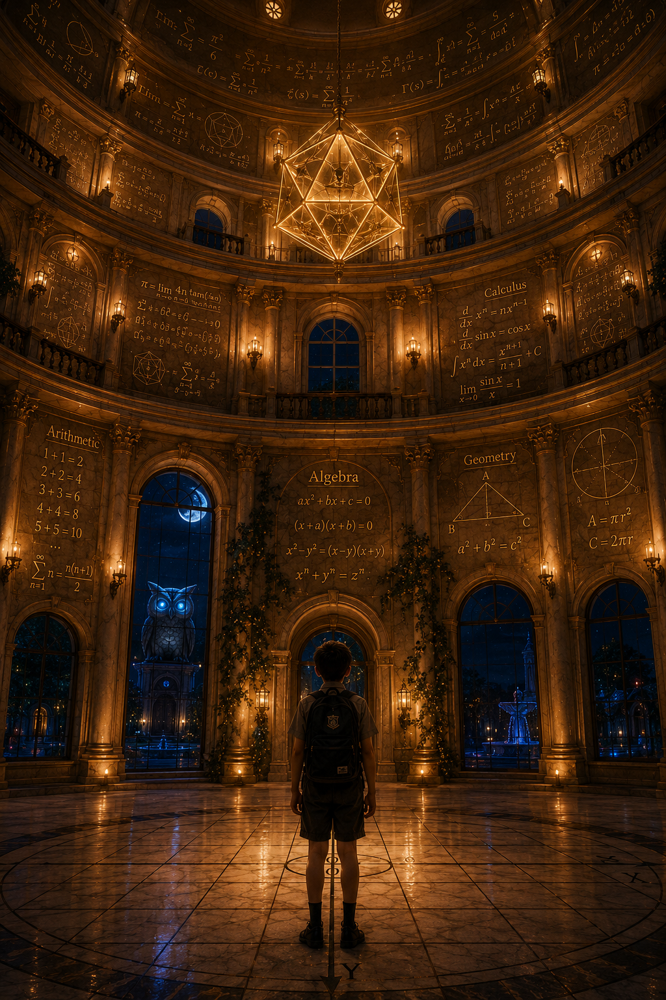
The marble floor beneath him was inlaid with a coordinate grid in deep charcoal stone.
Perfectly symmetrical.
Perfectly measured.
Ansh looked down.
He stood exactly at the center.
Zero.
Zero.
Origin point.
The place where every mathematical system begins.
Above him hung a massive chandelier shaped as a perfect icosahedron — twenty flawless triangular faces suspended in glowing golden light.
Geometry made holy.
Warm amber illumination poured across the atrium with such softness that it almost felt emotional.
Outside the towering windows, night remained still and beautiful.
The wolf statue glowed electric blue beyond the gates.
The fountain continued its endless fractal cascade.
And the owl—
Ansh’s breath caught.
The owl had turned.
It stared directly through the glass at him.
Watching.
Waiting.
Its amber eyes did not blink.
Ansh looked away quickly.
His gaze returned to the equations climbing endlessly up the walls.
Whoever built this place, he thought slowly, was the greatest mathematical mind that ever lived.
He had never felt so small.
Or so understood.
The realization should have terrified him.
Instead—
he smiled.
He didn’t notice himself doing it.
✦ ✦ ✦
Then he saw the staircase.
Or rather—
He saw where a staircase should have been.
At the center of the atrium, spiraling upward through open air—
smoke.
Deep crimson smoke rose from below the marble floor in controlled twisting streams.
And as the smoke climbed—
It formed steps.
Perfect steps.
Each identical in height.
Identical in width.
Each mathematically precise.
The staircase spiraled upward in widening arcs.
Golden spiral.
Fibonacci growth.
Ansh recognised the geometry instinctively.
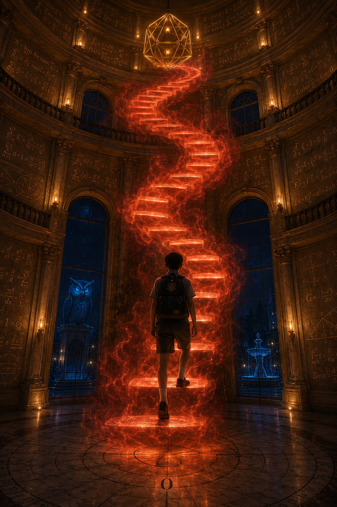
The staircase wasn’t random architecture.
It was a formula becoming physical.
Warm red light pulsed softly beneath each step.
Not threatening.
Inviting.
Ansh stared upward with awe.
Imaginary stairs, he thought.
Mathematics turning imagination into structure.
The idea alone felt impossible.
Beautiful.
He placed one foot onto the first smoke step.
It was held.
Firm.
Warm.
The crimson glow brightened slightly beneath his shoe—
as though acknowledging him.
Ansh climbed.
✦ ✦ ✦
Step two.
Warm smoke curled around his ankles.
Step three.
The equations on the wall beside him described perfect circles.
Step four.
Ellipses.
Step five.
Parabolas.
The conic sections unfolded one level at a time as he climbed higher.
The staircase was teaching him.
Or examining him.
He could no longer tell which.
The smoke thickened around his legs.
Warm red light flooded the atrium beneath him.
Below, the coordinate plane floor looked smaller now.
Farther away.
Step eight.
The owl still watched from outside.
Step nine.
His heartbeat quickened.
Step ten.
The first-floor veranda waited just above him.
White marble.
Golden light.
Step eleven.
Almost there.
Ansh reached toward the final step.
And the villa convulsed.
✦ ✦ ✦
The entire structure lurched violently.
Not like a building shaking.
Like a living thing spasming.
The marble floor below cracked apart along the coordinate grid lines with explosive precision.
The origin point shattered.
Zero divided itself.
The chandelier swung wildly overhead.
Its twenty glowing faces flickered in sequence, one after another, casting geometric shadows across the atrium walls.
For a horrifying moment—
the shadows appeared alive.
Ansh collapsed onto the veranda floor.
His mathematics textbook slid from his grip and spun across the marble, stopping precisely at the broken origin point below.
The railing beneath his hands vibrated violently.
Another convulsion hit.
Stronger.
Deeper.
This time the movement came not from beneath the building—
but from inside it.
The villa was shaking itself awake.
The towering window beside Ansh cracked diagonally from corner to corner.
Outside—
The fountain still flowed.
But the owl was gone.
The gates had closed.
And beyond the gates—
something stood watching.
Tall.
Still.
Wrong.
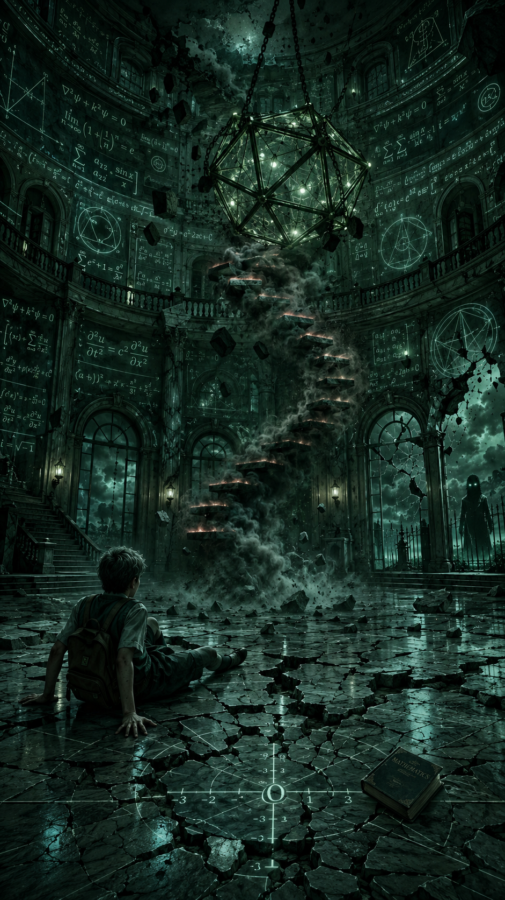
Ansh looked away before his mind could understand what he had seen.
Then the third convulsion came.
And this one had a voice.
Not words.
A vibration.
Low.
Ancient.
The equations carved into the walls had begun humming.
Ansh felt the sound inside his teeth.
Inside his skull.
Inside places that had no name.
And suddenly—
the warmth vanished.
Completely.
Cold exploded through the atrium.
Ansh’s breath fogged instantly in the air.
The amber windows darkened.
The chandelier lights died one by one.
Darkness swallowed the villa slowly.
Deliberately.
Then the equations began to glow.
Cold blue-white light spread through every carved symbol across the walls.
Variables.
Operators.
Proofs.
Theorems.
All glowing from within.
And moving.
Ansh stared in horror as the equations rearranged themselves across the stone.
Symbols shifted.
Numbers changed places.
Entire proofs dismantled themselves and rebuilt into impossible structures.
Mathematics no longer solved anything.
It broke reality instead.
Every wall displayed the same terrible equation.
The theorem with no answer.
Repeating endlessly across the villa.
The same theorem the ancient voice had been reciting since the sealed room.
The same theorem now glowing across every surface like infection.
✦ ✦ ✦
Then the villa itself began to rot.
The pale limestone walls darkened visibly before his eyes.
Warm ivory became dead grey.
Grey became yellowed bone.
The bone became something damp.
Diseased.
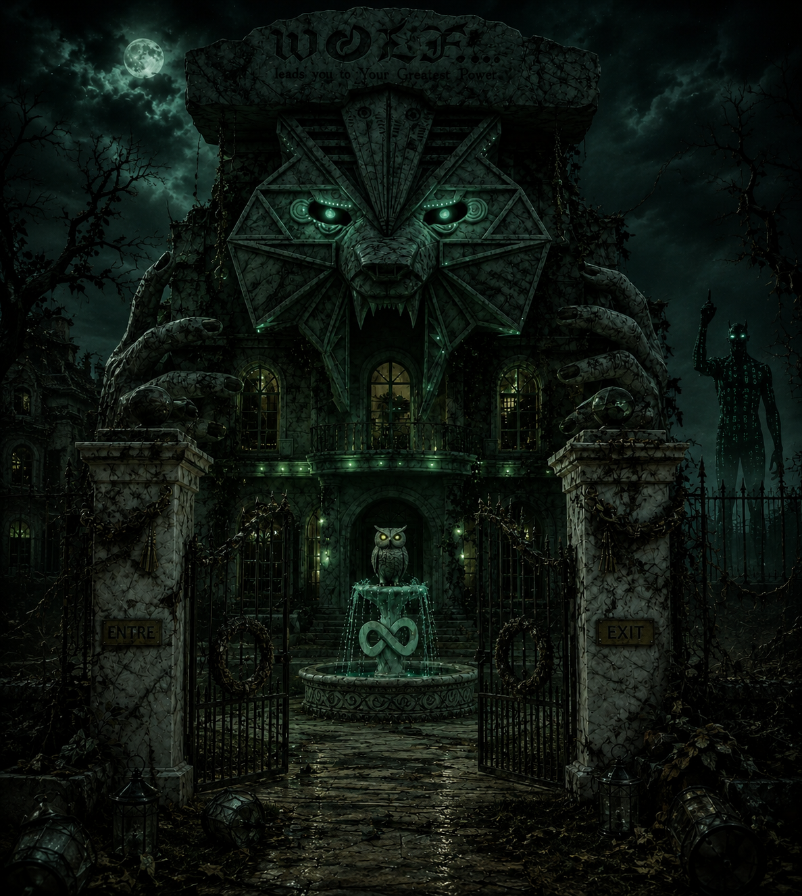
The vines outside the cracked windows blackened and recoiled violently from the walls as though the building itself had become poisonous.
The flower wreaths at the gate withered into twisted wire skeletons.
The lanterns along the path were extinguished.
And in the darkness beyond the closed gate—
the figure still waited.
Ansh forced himself to look at it fully this time.
It resembled a person only in the loosest possible sense.
Its limbs were too long.
Its fingers bent at impossible angles.
Its head tilted slightly sideways with unnatural stillness.
Its entire body glowed with the same cold mathematical light as the equations covering the walls.
Symbols crawled endlessly across its surface.
The theorem with no answer written over what should have been flesh.
But the worst part—
it had no face.
Only smooth glowing emptiness where a face should have been.
And yet—
Ansh knew it was looking directly at him.
The creature raised one long arm slowly.
Then pointed upward.
✦ ✦ ✦
Ansh tried to move.
His body refused.
The smoke staircase beneath him had begun dissolving.
Step by step.
One.
Gone.
Two.
Gone.
Gone.
The crimson warmth vanished with each disappearing step.
Below him, the fractured marble floor waited impossibly far beneath the veranda.
No way down remained.
Only up.
Ansh looked higher into the villa.
The staircase leading toward the second floor had changed.
No longer smoke.
No longer warm.
The steps now resembled blackened bone spiraling endlessly upward through darkness.
Go up. Evolve.
The inscription above the entrance returned to him suddenly.
Not an invitation.
Instruction.
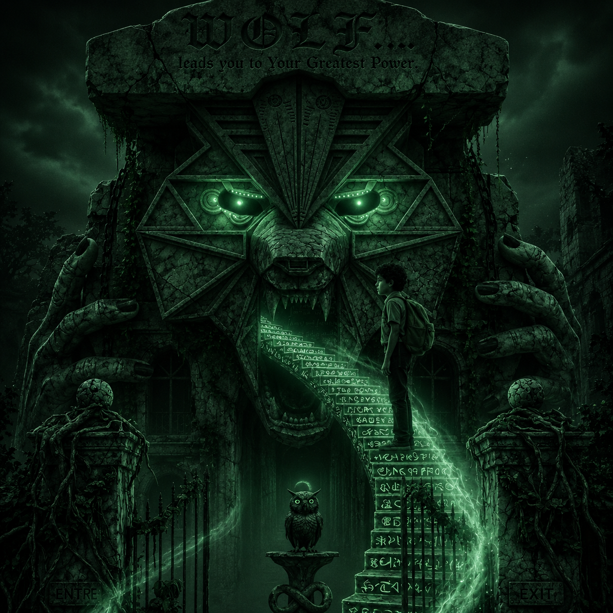
The faceless thing beyond the gate continued pointing upward patiently.
It would wait forever if necessary.
Ansh understood that instinctively.
With trembling hands, he retrieved his mathematics textbook.
Pressed it against his chest.
Looked once toward the impossible thing outside the gates.
Then toward the dark staircase above him.
And because there was nowhere else left to go—
Ansh climbed.
CHAPTER 5 THE TONGUE OF STONE
The staircase ended abruptly.
No landing. No final step. No warning.
One moment Ansh was climbing cold black stone, and the next he stood at the edge of a darkness so complete it no longer felt like the absence of light.
It felt older than light itself.
He stopped moving.
The last step remained solid beneath his shoes, but the floor ahead looked wrong — flat and endless and depthless, as though the darkness had swallowed the texture itself.
Ansh tightened his grip on the strap of his school bag.
His pencil case pressed against his ribs.
Ordinary things.
Painfully ordinary.
For one strange second, those objects mattered more to him than anything else in the world.
Then the wolf opened its eyes.
Blue-white light ignited inside the giant stone face dominating the far wall.
Not glowing.
Awakening.
The same cold colour that had spread through the equations inside MathVilla.
The same colour as the faceless creature beyond the gates.
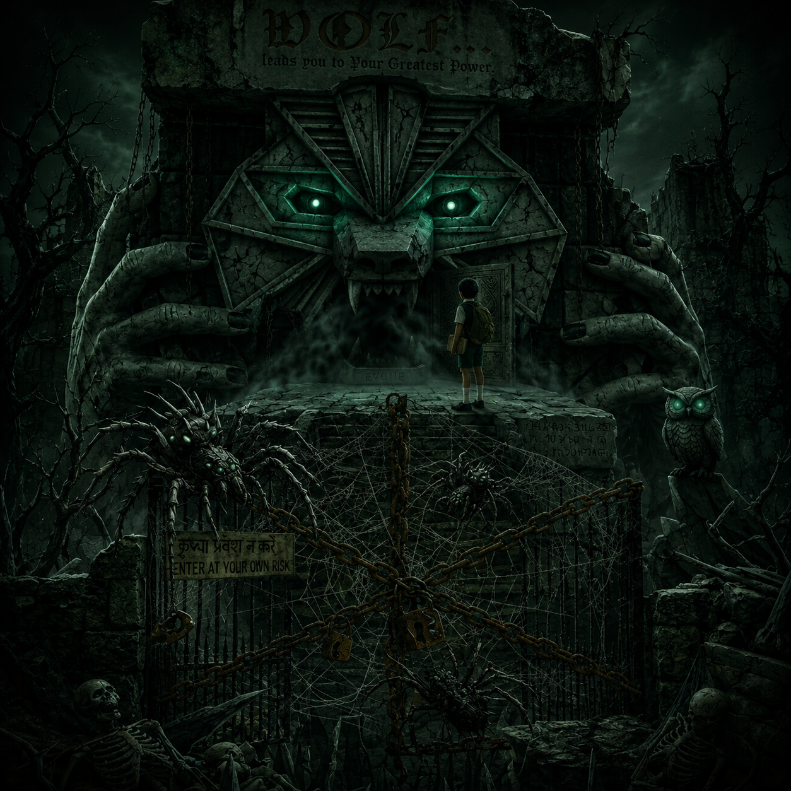
The wolf’s face was enormous.
Not sculpted like an animal.
Constructed like mathematics.
Its symmetry was too perfect to feel natural. Geometric lines spread from its eyes across the stone like hidden coordinates. Shapes nested inside shapes across its forehead and jaw — pentagons, spirals, recursive patterns that repeated deeper the longer Ansh stared at them.
The chamber vibrated.
Slow.
Rhythmic.
Like the pulse of something gigantic sleeping beneath the floor.
Ansh stepped backward instinctively.
The wolf did not move.
It didn’t need to.
Red fire gathered slowly inside its open jaws.
Not normal fire.
The flames emerged in two perfectly parallel streams, thin as wires and burning with impossible precision. They curved outward through the air in smooth geometric arcs without flickering once.
The flames illuminated nothing.
Produced no heat.
Consumed nothing.
They simply existed.
Like symbols suspended in space.
Ansh couldn’t stop staring.
His instincts were screaming at him to run, but the terrifying order of the flames trapped his attention completely.
Nothing this precise should exist naturally.
The growl came next.
Except it wasn’t really a growl.
It arrived first as pressure deep inside his ears.
Then as vibration beneath his feet.
Then finally as sound.
A low ancient resonance rolled through the chamber, so deep it felt architectural — as though the room itself were producing the noise through its dimensions and angles.
Above him, equations carved into the ceiling pulsed blue-white in perfect synchronisation with the sound.
Variables flickered.
Symbols shifted.
A spiral of prime numbers glowed briefly overhead before vanishing again.
Then the wolf’s stone jaw began to open.
Slowly.
Impossibly.
Stone grinding against stone with terrible precision.
Inside its mouth waited darkness.
But not empty darkness.
Contained darkness.
Purposeful darkness.
And far within it—
light.
Small.
Distant.
Waiting.
Ansh realised the wolf’s tongue was not a tongue at all.
It was a pathway.
Smooth black stone extending downward into the darkness beyond the jaws, wide enough for several people to walk side by side.
The light pulsed once at the far end.
Like a signal.
Ansh took a step forward—
then stopped himself.
“No,” he whispered.
His voice sounded weak inside the chamber.
Humans.
The light pulsed again.
Then the first note played.
✦ ✦ ✦
The sound resembled a piano.
Almost.
One clear lonely note drifted through the darkness, hanging in the air with unnatural purity before another joined beneath it.
The distance between the notes felt exact.
Calculated.
Not emotional.
Mathematical.
Then the melody began.
Simple.
Repeating.
Beautiful enough to hurt.
Ansh felt the terrifying familiarity of it immediately — the strange sensation that he had heard this melody before somewhere impossibly far away.
Each repetition returned to its beginning like a theorem looping back toward its own proof.
The music was not random.
It was structured.
Engineered.
Built.
Beneath the melody, almost hidden, another rhythm moved quietly underneath.
Counting.
Not audible enough to fully hear.
But present enough to feel.
The melody repeated again.
Ansh stepped onto the stone tongue.
This time he didn’t consciously decide to move.
His body moved first.
The decision came afterward.
The deeper he walked, the stranger the air became.
The chamber behind him faded gradually into silence while the darkness ahead thickened around the pathway without crossing it.
The melody grew clearer.
Not louder.
Sharper.
Each note became more distinct the closer he approached its source.
And beneath the repetition—
distortion.
Tiny changes.
A note lingering too long.
A transition arriving a fraction late.
Not mistakes.
Something deliberate hiding inside the pattern.
Something wrong buried inside something beautiful.
Ansh’s breathing slowed.
He noticed it suddenly.
Too suddenly.
The music was changing him.
His fear had not vanished.
It had been reorganised.
The world outside the villa already felt distant now.
School.
Exams.
The hostel.
Even Sakshi ma’am’s warning.
All of it seemed strangely unreal compared to the darkness ahead.
Then he saw the object.
And stopped walking.
✦ ✦ ✦
It rotated slowly at the center of the illuminated chamber.
A towering cylindrical structure suspended upright without visible support.
Not mechanical.
Not natural.
Something between sculpture and organism.
The surface turned with impossible smoothness while fragments of reflected light slid across it in shifting patterns.
At first Ansh could not understand what he was seeing.
Then the shapes aligned.
Three skeletal figures surrounded the central column.
Each robed.
Each distinct.
Yet fused together at the base like crystallised remains of something ancient.
The first figure wore deep golden robes covered in embedded symbols and dark jewels that shimmered with impossible colours.
A crown of mathematical sigils rested upon its skull.
In its hands lay an open book.
Beneath the book, a sword pointed vertically downward toward the floor like a perfect axis line.
The structure rotated.
The second figure emerged.
Pale rose robes.
Skeletal hands pressed together around a reflective shield that fractured the chamber light into dozens of shifting angles.
Not protection.
Observation.
The third figure wore deep green.
It held perfectly balanced scales.
Impossible scales.
Tiny geometric shapes hung from each side — spheres, prisms, teardrops — somehow remaining in absolute equilibrium.
Above all three figures sat something else.
Blue.
Ancient.
Still.
A divine-looking figure crowned with serpent-like extensions glowing faint purple in the darkness.
Unlike the others, it did not rotate.
Everything moved around it instead.
At its throat a single jewel.
Its light was so concentrated it felt less like illumination—
and more like a coordinate in space.
Golden branches extended outward around the construct, each ending in slow-burning symmetrical flames.
Together they formed a halo around the entire structure.
The melody continued.
Closer now.
Inside the metallic surfaces, Ansh suddenly saw his own reflection.
He froze.
It was his face-but altered, calculated differently,
As though mathematics itself had rebuilt him.
Using alternate proportions.
Not distorted.
Calculated differently.
As though mathematics itself had rebuilt him using alternate proportions.
And his reflected eyes—
looked back at him knowingly.
Ansh reached out instinctively.
The surface felt cool.
Deep-water cool.
Ancient cool.
His fingertips touched the object.
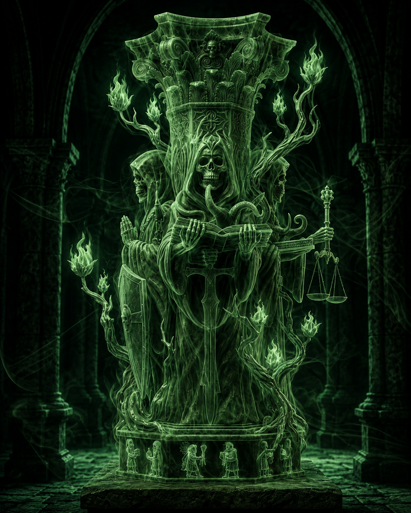
Everything stopped.
Instantly.
The rotation ceased.
The melody died.
Silence slammed into the chamber.
Not ordinary silence.
Hold silence.
Balanced silence.
The silence between two equal values.
For two heartbeats—
nothing moved.
Then the villa shook violently.
✦ ✦ ✦
Cracks tore across the ceiling in perfect mathematical lines.
The equations on the walls flickered wildly.
The stone walls bulged outward together in one slow impossible motion—
like the room itself inhaling.
Then behind him—
the wolf’s jaws slammed shut.
The impact travelled through the floor beneath his feet.
Through the object.
Through his body.
Ansh spun around.
Solid stone blocked the entire passage behind him.
The wolf’s mouth had sealed completely.
The red flames were gone.
The pathway had vanished.
Only stone remained.
Ancient.
Final.
The chamber continued pulsing slowly around him like the heartbeat of some buried intelligence.
And standing there with his palm still pressed against the motionless construct—
Ansh understood something terrible.
There was no outside anymore.
The staircase was gone.
The villa was gone.
The world itself suddenly felt impossibly distant.
His hand remained against the warm surface of the object.
And somewhere in the silence—
very faintly—
the melody waited.
Not gone.
Waiting.
Patient as mathematics.
Waiting for him to begin.
CHAPTER 6 THE SMALLEST SPARK
The darkness after the music felt different.
Not empty.
Waiting.
Ansh had known ordinary darkness all his life — dark classrooms during power cuts, dark hostel corridors after lights-out, dark corners beneath staircases where dust gathered quietly.
That darkness always belonged somewhere.
This one didn’t.
This darkness felt alive.
It pressed against him from every direction with slow, patient certainty, as though the villa had simply removed the light now that it no longer needed it.
Ansh stood perfectly still.
His hand remained raised slightly in the air, fingers curved from where they had touched the rotating structure.
Slowly, he lowered it.
His palm pressed against his school shirt.
His heartbeat hammered beneath it.
Too fast.
Okay, he thought.
Okay.
He repeated the word silently several times, trying to force calm into it.
Then he searched for the thread.
The glowing white thread had guided him through everything — the corridors, the staircase, the impossible transformations of MathVilla. He hadn’t trusted it exactly, but he had followed it.
And now—
it was gone.
Ansh turned slowly in a full circle, eyes straining through the darkness.
Nothing.
No glow.
No silver line.
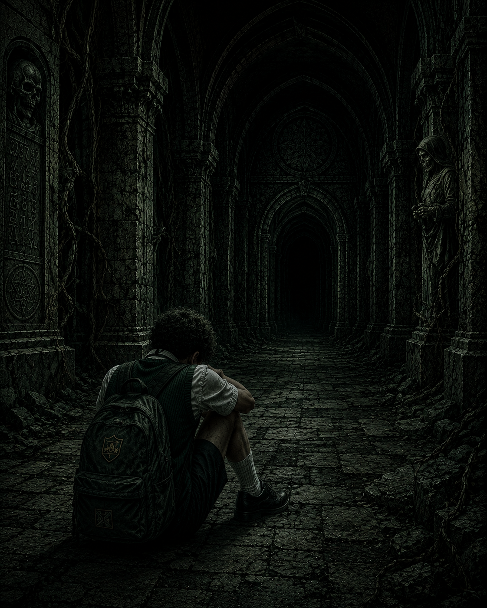
No sign it had ever existed at all.
The chamber itself had changed too.
The equations covering the walls had dimmed into faint dead-blue outlines. The towering statue stood motionless again at the center of the room, silent beneath the weak ambient glow.
Everything felt colder now.
Stiller.
The thread had abandoned him.
The thought landed harder than he expected.
Ansh clenched his jaw.
He turned once more, slower this time, fighting the rising panic in his chest.
Still nothing.
Finally his legs gave out beneath him.
He sat heavily against the base of the statue platform, knees drawn close, arms wrapped around them.
For the first time since entering the villa—
He felt completely alone.
Not frightened.
Not yet.
Lonely.
Fear moved.
Fear reacted.
This feeling didn’t.
This was the horrible silence of realising nobody knew where he was.
His school bag rested against his back.
Inside it:
textbooks
lunchbox
geometry box
water bottle
an eraser shaped like a football
Objects from another world.
A normal world.
The villa pulsed softly around him.
Deep beneath the floor, something enormous continued breathing in slow rhythmic waves.
Then—
two footsteps echoed somewhere in the dark to his left.
Ansh lifted his head sharply.
Silence.
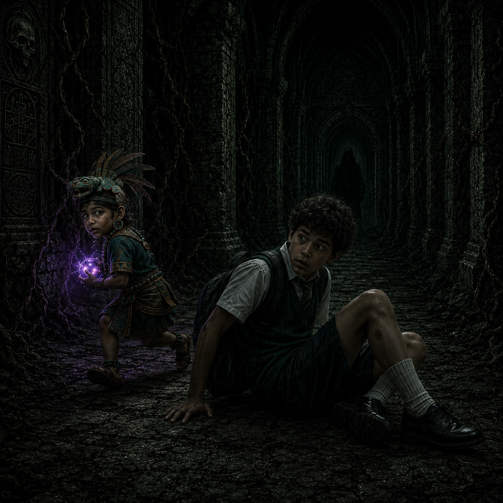
A few seconds later—
two more footsteps.
Slow.
Measured.
Not approaching him.
Moving parallel to him somewhere beyond the darkness.
He pointed his gaze toward the sound.
Nothing stared back.
The footsteps stopped the moment he focused on them.
Then, faintly—
music.
High above him.
Barely there.
The same melody from before.
Not fully playing.
Just lingering in the air like the memory of a song someone had stopped humming moments ago.
It vanished the instant he recognised it.
Ansh swallowed hard.
Then something breathed beside him.
Cold air slid across the right side of his face.
One slow inhale.
One slow exhale.
Close.
Far too close.
Ansh turned instantly.
Nothing.
Only darkness.
His breathing had become shallow again.
He forced himself to slow it.
Four counts in.
Four counts out.
Sakshi ma’am once taught the class before exams.
Strangely—
It worked.
His heartbeat steadied slightly.
Think properly, he told himself.
So he did.
He wasn’t injured.
He wasn’t trapped without air.
The villa had entrances. Corridors. Levels.
If there was a way in—
there had to be a way out.
Mathematically, at least, that made sense.
He needed light.
No answers.
Not escape.
Just light.
And suddenly—
Ansh froze.
His bag.
He stared at it for one full second.
Then immediately pulled it off his shoulder and unzipped the side pocket with shaking fingers.
His father’s torch.
Small.
Cheap.
Ordinary.
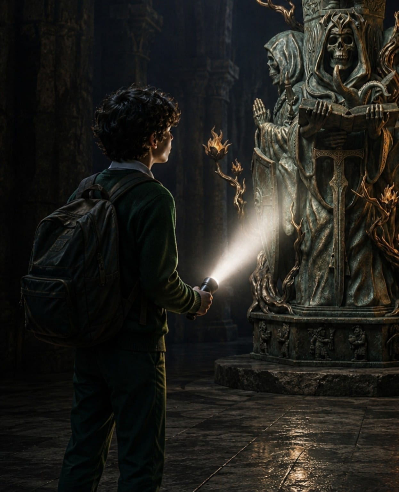
His father had clipped it there months ago for school power cuts.
Ansh had forgotten it existed.
Now it felt like discovering fire.
He grabbed it.
Pressed the switch.
Light burst into the darkness.
Weak light.
Small light.
Beautiful light.
A modest yellow-white circle spread across the stone floor around him.
The darkness retreated slightly.
Not defeated.
Just pushed back.
Watching from beyond the edges.
But the torch was real.
Solid.
Humans.
Something understandable inside a place that understood nothing about humanity.
Ansh slowly lifted the beam toward the statue.
The figures looked different now beneath the torchlight.
Less divine.
More ancient.
Golden robes reflected warmly.
Jewels flickered like distant stars.
The scales remained perfectly balanced.
The open book rested silently in skeletal hands.
Then Ansh stopped moving the light.
Something was wrong.
He stepped closer.
Raised the torch higher.
And realised—
there was an empty space.
A fourth position in the structure.
Clearly part of the original design.
Clearly missing something.
He stared at the hollow section near the base.
An absence shaped deliberately into the statue.
Then the name appeared in his mind.
Ganith.
Ansh frowned immediately.
Why had he thought that?